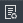

Procesar alarma
Según la situación de alarma, procesa la alarma.
| 1. | Según la situación de la alarma, se procesa el botón de alarma 〖〗 y se abre la ventana de despacho de alarma, como se muestra en la figura a continuación.
Fig 43 Ventana de despacho de alarma En la ventana de despacho de alarma, el sistema proporciona automáticamente la información relacionada con la alarma: número
de matrícula, hora de la alarma, persona de despacho, tiempo de despacho.
|
| 2. | Juzgue que la alarma es verdadera o falsa, si la alarma es verdadera, marque el √, de lo contrario, no marque. |
| 3. | Marque si necesita transferir el incidente. Cuando necesite transferir el incidente, marque el √ y elija el modo de transferencia: 911. |
| 4. | Seleccione el nivel del evento, el tipo de evento y configure la dirección del evento y la información de notas. |
| 5. | Agregue la información del destinatario del correo electrónico correspondiente al nivel de evento seleccionado y marque si debe enviar el correo electrónico según sea necesario. |
| 6. | Haga clic en 〖Aceptar〗. Si necesita transferir la alarma, vaya al sistema externo para procesarla. Si no necesita transferir la alarma, el procesamiento de la alarma finaliza. |